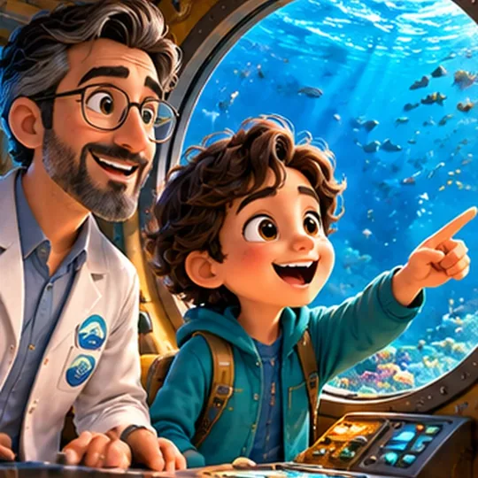

أسرار المدينة الغارقة
ينضم سامي إلى رحلة علمية في غواصة صغيرة، فيكتشف محطة أبحاث غارقة وشبكة بلاستيكية تهدد السلاحف، ويتعلم كيف يحمي البحر بالعلم والعمل المستمر.

نص القصة كاملًا
انضم سامي إلى رحلة علمية مع فريق بحري. كان يحلم برؤية الشعاب المرجانية من داخل غواصة صغيرة.
عند القاع، ظهرت قباب زجاجية مهجورة بين الصخور. أشار الباحث إلى أنها محطة أبحاث قديمة.
لاحظ سامي سلحفاة تحاول السباحة قرب شبكة بلاستيكية عالقة. أبلغ الفريق فورًا.
استخدم الباحثون ذراعًا آلية لإزالة الشبكة بحذر. ابتعدت السلحفاة بأمان.
داخل المحطة وجد الفريق سجلًا يوضح أن التيارات تحمل النفايات من الشاطئ إلى البحر.
قارن سامي عينتين من الماء. كانت إحداهما تحتوي على قطع بلاستيكية صغيرة أكثر من الأخرى.
اقترح سامي رسم خريطة لمصادر النفايات بدل تنظيف المكان مرة واحدة فقط.
عاد الفريق إلى الشاطئ ونظم حملة لجمع النفايات وفرزها، بمشاركة الأهالي.
بعد أسابيع، أعاد الباحثون القياس. انخفضت كمية النفايات في المنطقة التي تابعوها.
كتب سامي في دفتره: الاكتشاف يبدأ بسؤال، وحماية البحر تحتاج إلى عمل مستمر من الجميع.